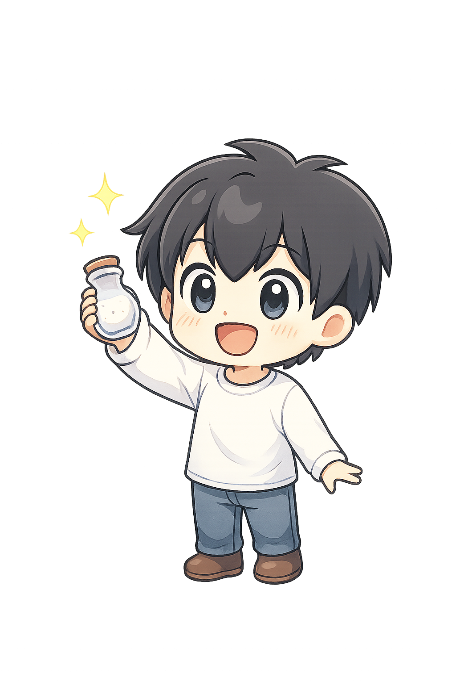
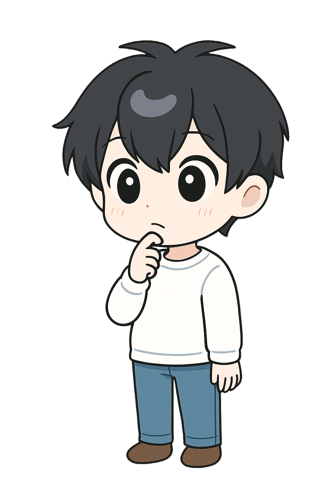
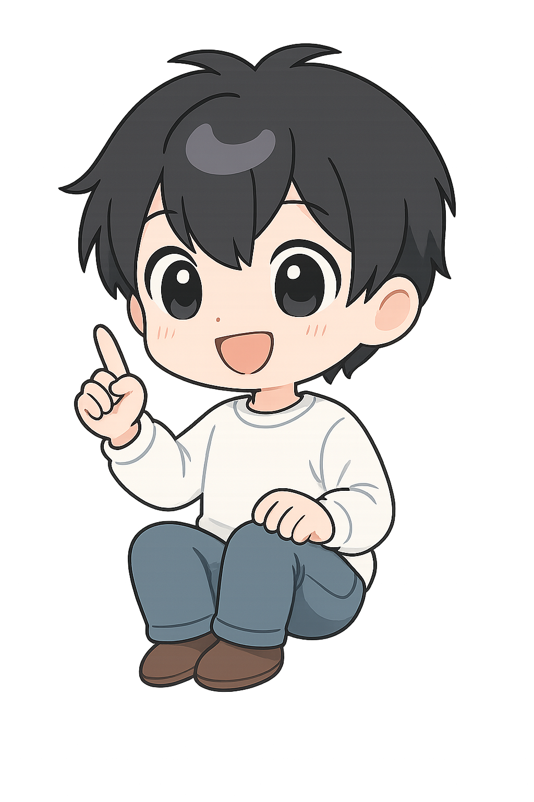
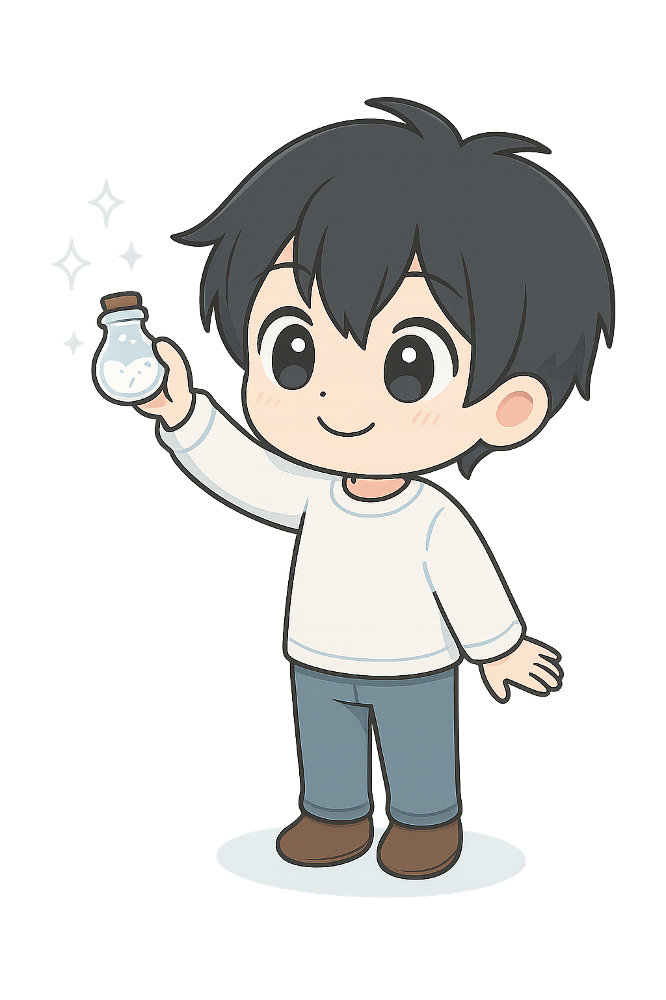

どっちが
使いやすい？
使いやすい？


たとえば、工作で使うはさみ。
指を入れる穴の大きさが違うのはなぜ？
それは、親指と他の指の太さが違うから。
「使いやすい」ための形になっているんだ。
そんな「隠れた工夫」のことを、
ここでは「デザインの裏側」って呼ぶよ。
「手」の骨格や筋肉の動きを
研究して形を決めているんだ。
人間工学
っていう考え方だよ！

普段なにげなく使っている道具にも、理由があるんだ。
タップしてみて！
こぼさず運べる「くぼみ」
液体をすくうための最適な深さとカーブが計算されている。
タップしてみて！
誰もが届く絶妙な高さ
床から約90cm〜100cm。子供から大人まで自然に手が届くユニバーサルデザイン。
タップしてみて！
熱さを避ける取っ手
熱伝導を防ぎ、しっかりと握れるループ形状。
タップしてみて！
指に沿った凹み
指先のカーブにフィットし、打鍵ミスを減らす工夫。
画面の中のパーツを触ってみよう。全部動くよ！
小さな工夫が積み重なると、
デザインはぐっと使いやすくなります。
「危険」「エラー」を直感的に伝える色。
色角が丸いと「優しそう」「指にフィットしそう」に見える。
形文字がぎゅうぎゅうだと読みにくい。適度な隙間が大切。
余白左端や上端を揃えるだけで、情報はこんなに見やすくなる。
形「できた！」という安心感を与える色。信号と同じだね。
色関係あるもの同士を近づけて、関係ないものは離す。
余白青くて下線がある文字は「別のページに行ける」ルール。
色「注意」「注目」を促す色。信号の黄色と同じ役割。
色人の顔やアイコンによく使われる形。親しみやすさを出す。
形要素の外側の余白。隣の要素との距離を保つために重要。
余白暗い背景に白い文字。目の疲れを軽減し、省電力にもなる。
色「真面目」「信頼」「安定」といった印象を与える。
形近くにあるものは「関係がある」と認識される法則。
余白

デザインの工夫を詰め込んだ、
実際のUI画面たち。
計算された形や動き。
それらはすべて、使う人への